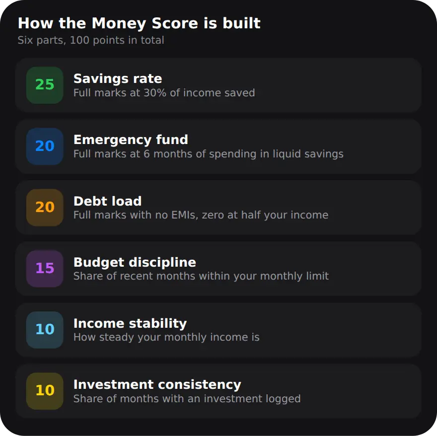

What does the Money Score measure?
It sums up how much you save, how much cushion you have, how much of your income goes to EMIs, and how steady your habits are, as one number out of 100.
Any one of these can look fine on its own while another is slipping. A good savings month means less if most of your income is already promised to EMIs, and a big emergency fund matters less if spending keeps running past your limit. The score puts them side by side, so you can see the overall picture and, more usefully, which part is holding it back. It uses only what you have logged in MoneyOS, and it is worked out on your iPhone.
How is the Money Score calculated?
Six parts share 100 points. Each part earns a share of its points depending on how close you are to full marks, and the total is rounded once at the end.

Savings rate (25 points) is the share of your income you did not spend, with full marks at 30%. Emergency fund (20) is how many months of spending your liquid savings would cover, with full marks at 6 months. Debt load (20) is your monthly EMIs as a share of income: no EMIs earns full marks, and the points reach zero when EMIs take half your income. Budget discipline (15) is the share of recent complete months you stayed within your monthly limit. Income stability (10) rewards income that does not swing much from month to month, and needs at least two months of income to judge. Investment consistency (10) is the share of months with an investment logged, such as a SIP. Read more on tracking SIPs and EMIs.
How do I read my Money Score?
Open it from the Stats tab, then start with the biggest opportunities: they show where the most points are waiting. Five steps:
- Open the score. In the Stats tab, tap the Money Score row under the month's verdict.
- Check it has unlocked. The score needs at least one income entry and 30 days of history. Until then it says what is missing instead of showing a number.
- Read the biggest opportunities. The first list shows the three parts where you are leaving the most points on the table.
- Fill in what the ledger cannot see. Open Score inputs from the top of the Money Score screen or from Settings. Emergency fund, debt-to-income and budget adherence fill themselves in from your net worth, EMIs and monthly limit, and you can set any of them yourself.
- Check back next month. The score uses your own history, so it changes as your months change, not because the app changed its mind.
In the example, the score is 75. Emergency fund is at 10 of 20 points, so it is the biggest opportunity, worth more than savings rate or investment consistency. The dial is green from 70, orange from 40 and red below 40.
Why does the score ask for score inputs?
Three parts need more than your transactions: emergency fund, debt load and budget discipline. MoneyOS fills them in from your own data where it can.
Emergency fund fills itself in once you add a savings, FD or cash asset under Net worth. Debt load comes from your EMIs and your logged income. Budget discipline needs a monthly limit, set under Manage and Limits. Where MoneyOS cannot tell, it says the value is not known yet rather than guessing, and you can set any of the three yourself. Your number always wins. See how to track your net worth.
What the Money Score is not
It is not a credit score, it is not advice, and it is not produced by AI.
Banks and lenders never see it. It lives in MoneyOS on your iPhone, with no account and nothing sent to us. It is a summary of your own entries, so it is only as complete as what you log. The formula is fixed and versioned: no language model calculates the number, so the same entries always give the same score, and it never moves because a model changed. If you want a deeper look at a month, try the 10-minute monthly review.
Frequently asked questions
What is the Money Score in MoneyOS?
A number from 0 to 100 that sums up six parts of your money: savings rate, emergency fund, debt load, budget discipline, income stability and investment consistency. It is worked out on your iPhone from your own entries.
Is the Money Score a credit score?
No. It is not a credit score and it is not shared with any bank or lender. It is a private summary inside the app, worked out from what you have logged.
Why does my Money Score say locked?
It needs at least one income entry and 30 days of history. Until then, MoneyOS tells you what is missing rather than showing a number based on too little data.
How is the Money Score calculated?
With a fixed formula. Savings rate is worth 25 points, emergency fund 20, debt load 20, budget discipline 15, income stability 10 and investment consistency 10. Each part earns a share of its points, and the total is rounded once at the end.
Can AI change my Money Score?
No. The score comes from a fixed, versioned formula. No language model calculates it, so the same entries always give the same number.
Is MoneyOS free?
Yes. The whole app is free, with no subscription, no ads and no in-app purchases.